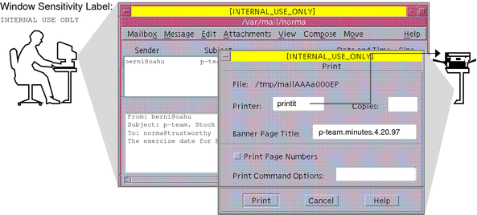
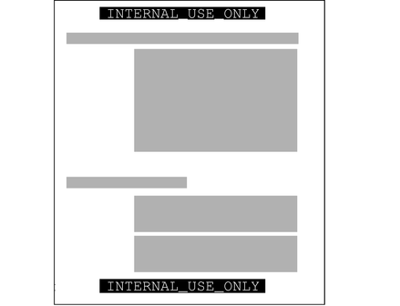
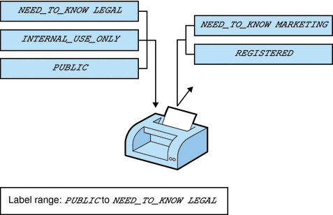
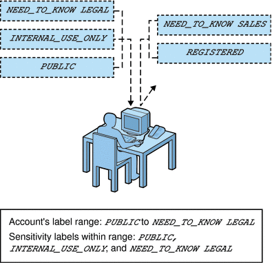

|
|||
|
1. Labels in Trusted Extensions Software 3. Making a Label Encodings File (Tasks) 4. Labeling Printer Output (Tasks) 5. Customizing LOCAL DEFINITIONS 6. Example: Planning an Organization's Labels Climbing the Security Learning Curve Analyzing the Requirements for Each Label Editing and Installing the label_encodings File Configuring Users and Printers for Labels |
Identifying the Site's Label RequirementsSecCompany, Inc. is a fictional name for the company whose label requirements are modeled in this example. To protect the corporation's intellectual property, the company's legal department mandates that employees use three labels on all sensitive email and printed materials. The three labels, from most sensitive to least sensitive are the following:
The legal department also approves the use of an optional fourth label, Public. The Public label is for information that can be distributed to anyone without restrictions. Satisfying Information Protection GoalsAt SecCompany, Inc, the manager in charge of Information Protection makes use of all possible channels to communicate labeling requirements. However, some employees do not understand the requirements. Other employees forget about requirements or ignore the requirements. Even when labels are properly applied, the information is not always properly handled, stored, and distributed. For example, reports indicate that even Registered information is sometimes found unattended. Copies of Registered information have been left next to copy machines and printers, in break rooms, or in lobbies. The legal department wants a better way to ensure that information is properly labeled without relying totally on employee compliance. The system administrators want a better way to control the following:
Trusted Extensions Features That Address Labeling and AccessTrusted Extensions software does not leave labeling up to the discretion of computer users. All printer output from print servers that are configured with Trusted Extensions is automatically labeled according to the site's requirements. Even though security was not yet fully understood at the company, executives knew that Trusted Extensions could implement certain features immediately.
Figure 6-1 Automatic Labeling of Print JobsEach print job is automatically assigned a label. The label corresponds either to the level at which the user is working or to the user's level of responsibility. Figure 6-1 shows an employee working at a level of INTERNAL_USE_ONLY. At this level, the work should only be accessible by SecCompany employees and others who have signed nondisclosure agreements. When the employee sends email to the printer, the print job is automatically assigned the label INTERNAL_USE_ONLY. Figure 6-2 Label Automatically Printed on Body PagesThe printer automatically prints a company-specified label at the top and bottom of each page of printed output. Figure 6-2 shows the letter that was sent to the printer in Figure 6-1 being printed with the user's working label. The label, INTERNAL_USE_ONLY, is printed at the top and bottom of every page. Example 6-1 Handling Guidelines on Banner and Trailer PagesThis example shows the wording for a print job whose sensitivity level has a classification of NEED_TO_KNOW and a department of HUMAN_RESOURCES. Banner and trailer pages are automatically created for each print job and are printed with company-specific handling guidelines. NEED_TO_KNOW HR DISTRIBUTE ONLY TO HUMAN RESOURCES (NON-DISCLOSURE AGREEMENT REQUIRED) Printed below the sensitivity label, handling instructions provides distribution instructions for the printed material. The instructions state that the information should be distributed only to human resources personnel who need to know the information. Also, a reader must have signed a nondisclosure agreement. Printers can be configured to print only jobs with labels within a restricted label range. For example, Figure 6-3 illustrates that the legal department's printer has been set up to print only jobs that have been assigned one of three labels:
This printer setup excludes jobs that are sent at any other label. For example, this printer would reject jobs at the labels NEED_TO_KNOW MARKETING and REGISTERED. Figure 6-3 How a Printer With a Restricted Label Range Handles JobsPrinters in locations that are accessible to all employees can be similarly restricted. For example, printers can be configured to print jobs only at the two labels that all employees can view, INTERNAL_USE_ONLY and PUBLIC. Similar to how the printer label range controls which jobs can be printed on a particular printer, a user's account sensitivity label range limits which email the person can handle. Figure 6-4 shows email that is being labeled at the sensitivity label of the user's mail application. The email is sent to the mail application at that label. Figure 6-4 A User Receiving Email Within the Account Label RangeGateways to the Internet were set up to screen email so that emails at inappropriate labels could not be sent outside of the company. Inappropriate labels are any labels except PUBLIC. |
||
|